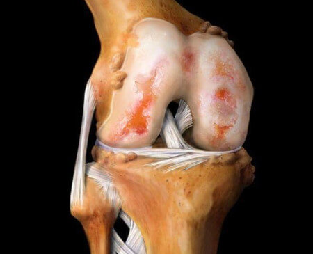
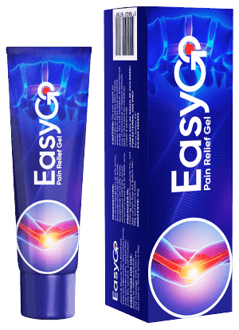

Professor Mariano Bueno: "You have been trying to cure your joints for years but in fact, they can be restored in 3 weeks!"
Read about the contribution of Professor Mariano Bueno to the treatment of joint diseases and learn how to buy the remedy for joint-related diseases for only .
In 2018 the research team led by Professor Mariano Bueno conducted a series of laboratory tests on an innovative medicament for joints. The results exceeded their expectations. After comparing the new drug with popular pharmacy products, the scientists had no doubt left that a new era in Rheumatology was coming! The researchers applied for certification of the drug and wanted it to be put into mass production. But then a tragedy happened - Professor Mariano Bueno passed away. Is there a chance that the product will still be launched? Our correspondent addressed this question to the chief rheumatologist of the Philippines Aweng Daclan who also took an important part in the research.
Comment from Dr. Daclan. "We overcame the first shock after the loss of Professor Mariano Bueno and decided to bring his life's work to completion."
Correspondent: Good afternoom, Dr. Daclan. In what development stage is the remedy now?
Aweng Daclan: Good afternoon! I am pleased to inform you that after all the tests, permission was obtained for introducing the drug into the pharmaceutical market. The remedy is called Easy GO. This is exactly what it provides – its components are so beneficial to the joints that your movements will no longer cause you pain and discomfort. You will really start to move freely!
Clinical trials of Easy GO have shown its high effectiveness in the treatment of joints. According to the most conservative estimates, this drug extends the lifespan of people suffering from joint diseases by at least 10 years!
Correspondent: Dr. Daclan, could you tell us what makes Easy GO stand out from the usual pharmacy products?
Aweng Daclan: As a rule, patients with joint diseases are prescribed one of the following drugs:
- Diprospan;
- Diclofenac;
- Dexamethasone;
- Alflutop;
- Movalis;
- Mydocalm;
- Meloxicam;
- Prednisolone;
- Teraflex;
- Mucosat;
- Aertal;
- Chondrogard;
- Artra;
- Artrozan;
- Fermathron;
- Celebrex;
- Diaflex;
- Chondrolon;
- Sirdalud;
- Ketorolac;
- Chondroxide;
- Flamax;
- Allopurinol;
- Alflutop;
- Flaxen;
- Fermathron plus;
- Artrosilene.
Some of them are really capable of relieving pain, but for the most part they provide a temporary effect. In fact, they only relieve pain rather than treating the disease and stopping the degenerative processes. Moreover, long-term use of such drugs destroys the kidneys, liver and stomach. Basically, it is a vicious circle, where the patient is forced to constantly use a medicament that adversely affects the body to reduce pain, while the cause of this pain is not cured. This is despite the fact that joint diseases are extremely serious may lead to devastating consequences such as cancerous tumors.
Let me tell you what complications joint disease may lead to. The most common diseases of the joints usually develop in the following way:
| Disease | Complications at an early stage | Late stage complications |
|---|---|---|
| Arthritis | Necrosis of cartilage, joint destruction, synovitis | Complete destruction of the joint, sepsis, cancerous tumor in the joint |
| Osteoarthritis | Inflammation of the cartilage, changes in the structure of the joint and its degradation, risk of blood infection | Disability (joint failure), destruction of cartilage, cancerous tumor in the joint |
| Osteochondrosis | Intervertebral protrusion, displacement of the intervertebral discs, pinched nerves | Spinal hernia, Central nervous system disorders, a risk of organ failure, cancerous tumors in the spinal cord |
| Coxarthrosis | Bone growth, degenerative changes in the cartilage and joints, degenerative changes in the joint capsules | Restriction of motor activity (disability of 1-2 degrees), cancer |
| Osteoporosis | Necrosis of the connective tissue, necrosis of bone tissue | Deformation of bones and skeleton, failure of the extremities, a risk of cancer caused by necrosis of bone tissue |
| Bursitis | Inflammation of the periarticular synovial bag, accumulation of purulent exudate | Blood poisoning, failure of joints, putrefaction of the tissues of the muscles, malignant tumors |
| Gout | Inflammation of the foot joint, calcination, concentration of urinary crystals in bone tissues | Bunions, enlarged joints, necrosis of the foot bone tissue, benign tumors |
As you can see, joint diseases very often lead to serious complications that are fraught with disability or even death. For the last 100 years, the load on the human skeleton has been continuously growing. As a result, almost every person older than 25 has at least 1-2 affected joints. By the age of 35-40, the disease progresses into a stage fraught with severe complications.
For illustrative purposes, you can look at these photos taken in hospitals:
1. The knee joint of a patient suffering from arthrosis (the patient used "classical" methods of treatment). Injections relieved him from pain for a while. However, they did not slow down the development of the disease in any way. As a result, his leg had to be amputated. He is now permanently disabled.

2. The consequences of osteochondrosis (painkillers were used instead of any kind of treatment). Result: 2 hernias that developed into cancerous tumors. The patient was operated on, but unfortunately the surgery did not help and the woman died.

3. The consequences of arthritis of the hand. As you know, it is impossible to provide any help when the inflammatory process has already started and sepsis has begun. The patient had his fingers and part of his arm amputated. But it did not save him, infection spread to the rest of the body and the man died after six months of intensive treatment.

Now let's get this conversation back on a more or less positive track. Like many other medical scientists, Professor Mariano Bueno spent decades studying alternative medicine. He was especially interested in the secrets of longevity and health. We teamed up to use the best of Professor's knowledge and research experience in the formula of Easy GO. The natural ingredients of Easy GO have proven to be the KEY factor in the treatment by providing healthy blood supply to the affected joint. All you need is ensure the restoration of blood supply to stop the necrosis and inflammation and start the process of regeneration. The problem is that it sounds easy, but in practice it was not possible to implement using any of the existing treatment options. Luckily, Easy GO was created. Moreover, after the completion of clinical trials, it is available for just as part of a special program.
Before the drug was selected for distribution under the program, large-scale clinical trials were conducted. A total of 10,120 people suffering from various diseases of the joints from different age groups took part in the trials. 93.8% fully cured their disease. 5.6% still have some problems, but in general their condition has improved significantly. Roughly speaking, test subjects who had a severe form of arthritis and could barely walk ended up with periodic light pains in the joint after undergoing a course of treatment. Only 0.6% of test subjects saw some improvements that were significant, but not significant enough to say they have completely recovered.
Correspondent: Did I hear it correctly? Are you offering a miracle drug for just ?
Aweng Daclan: Yes, it is true. In memory of Professor Mariano Bueno, we organized a foundation named after him, received sponsorship funding, and launched a program for joint recovery. A budget of ₴ 224 million was allocated by the sponsors of the Academy of Rheumatology. That is why we have the opportunity to sell Easy GO for just , when its full price is per package. And yes, it really works. I personally supervised the clinical trials and I can confirm that the drug is extremely effective.
Normal joint disc
Joint disc that changed due to degeneration
Protrusion of the joint disc
Slipped joint disc
Thinning of joint disc
Joint disc degeneration with osteophytes
Let me show you the results of clinical studies of Easy GO. They surprised many doctors, in a good way. It will be a real salvation for those patients whose joints ache.

Pain disappeared in 8-10 minutes in 100% of study subjects

Cartilage tissue was restored after a course of Easy GO in 98% of cases

93% of study subjects got rid of arthritis and arthrosis after a course of treatment
And these are the images of joints "before" and "after" the use of Easy GO.
Affected joint
Healthy joint

Correspondent: Pretty impressive! Could you explain what it means for ordinary people with joint diseases?
Aweng Daclan: This means that modern medicine of the Phillipines has made a major breakthrough, and you will be able to cure your disease at home in one to two months. Easy GO is not an analgesic. It "restarts" the body at the cellular level. It eliminates the cause of the disease and restores the joints and spine to their original, healthy condition. The patient not only gets rid of symptoms, but eliminates the root cause of the disease by improving blood supply to cartilage that was previously weakened by slow, old cells.
Starting from day one, Easy GO starts the process of body regeneration. It relieves pain too, so you will immediately feel its action. In just two or three weeks, regeneration will be complete.
Correspondent: Does Easy GO help only when you have certain diseases of the joints?
Aweng Daclan: No. I'm telling you: it acts at the cellular level by stimulating the processes of regeneration. It treats absolutely any disease of the joints and spine including arthrosis, arthritis, osteoporosis, rheumatism, gout, sciatica, radiculitis, osteochondrosis, displacement of vertebral discs, and many others. It treats any diseases of the joints at any stage.
Correspondent: Does the gel really eliminate all of these diseases rather than just relieving the pain?
Aweng Daclan: Easy GO both eliminates the pain (in the initial stages of treatment) and completely cures the disease. Of course there are other way of treatment of these diseases, but as a rule they are all associated with surgery and are very dangerous. Not to mention the fact that the cost of a knee surgery is incredibly high and a very small number of people can afford it.
Correspondent: How can people get Easy GO for ? Who is eligible?
Aweng Daclan: Absolutely anyone can order it. There is only one thing - because of small volumes of production, there is a limited number of items for sale under the program. At the same time, anyone can fill in the request form and get Easy GO for just . All you need is provide your name and phone number. You will be contacted via this phone number by an operator of our consulting center.
Correspondent: What is the time frame of the program?
Aweng Daclan: The promotional progam ends on (inclusive). All you need to do is place your order via the website. If you haven't done so, I recommend you hurry up because it will be impossible to by the gel for after that. I personally guarantee that all requests placed until that time will be processed and people will receive the drug.
Dr. Daclan, thank you for the interview! Would you like to say something to our readers before we wrap up the interview?
Aweng Daclan: Yes, certainly. I would like to draw the readers' attention to the fact that diseases of the back and joints affect younger people these days, and even weak periodic pain is a sufficient reason to pay attention to the problem. The doctors will hardly try to persuade you to undergo treatment. Your health is in your own hands.
And remember: diseases that occur due to pain in the back and joints are more than just a source of discomfort. They shorten your life by 15-20 years.

Old price:
New price:
Today you can order Easy GO with 50% discount:
Let us remind you that the discount is valid only until (inclusive).
Liked the article? Share it with friends!

Kind regards, Dr. Daclan
Kind regards, Dr. Daclan
Kind regards, Dr. Daclan
There's a promotion, hurry up!
I ordered it from the official website They called me back really quickly and confirmed the order. I want a pain free life and I want to go hiking.
Kind regards, Dr. Daclan
Kind regards, Dr. Daclan
Please beware of imitations.
Kind regards, Dr. Daclan
Pharmacies deceive the public by selling Easy GO at very high prices.
This woman became paralyzed due to protracted spinal problems.
Why surgery on arthrosis patients is very difficult to do.
387 945 people suffer from joint problems.

15 doctors were jailed for selling fake ointments.
ATTENTION!
Get Easy GO for joint restoration at a discounted price!